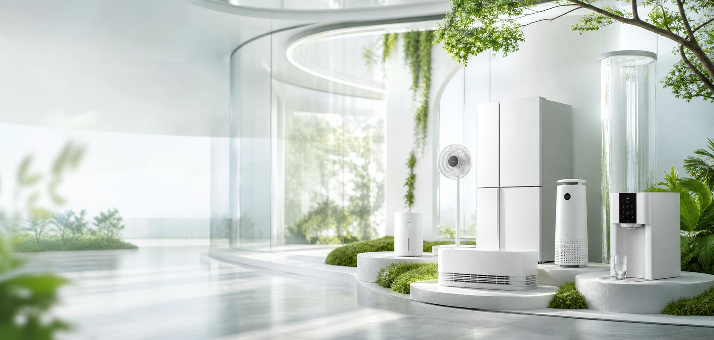
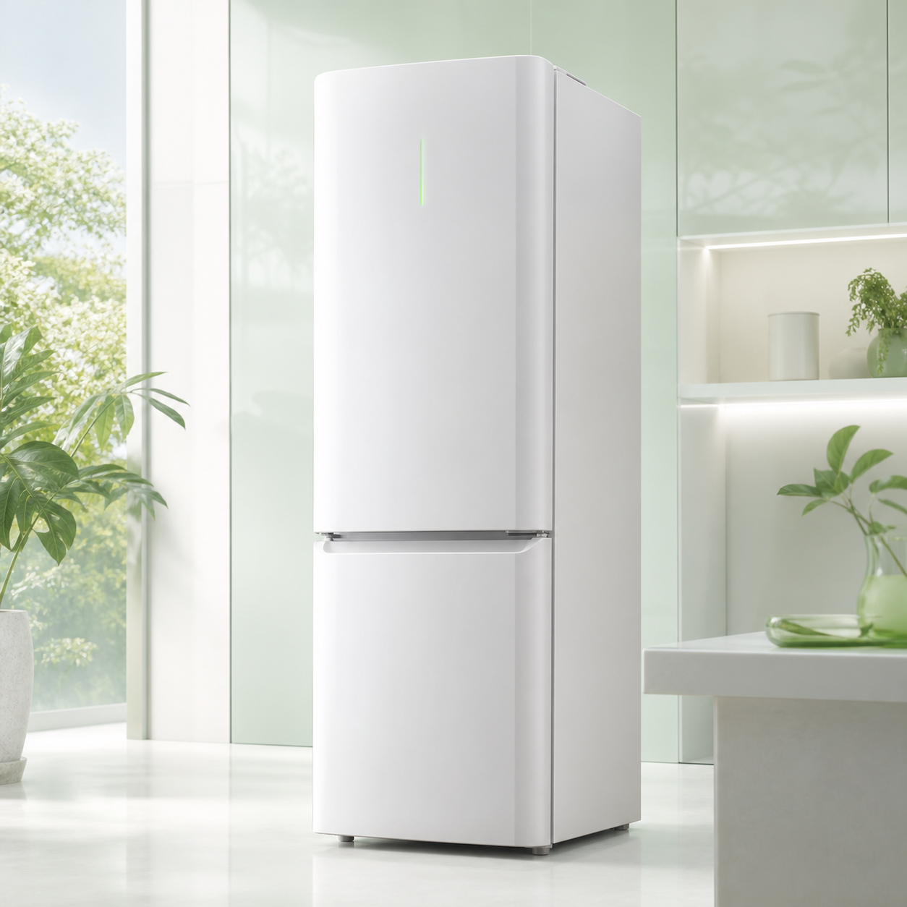
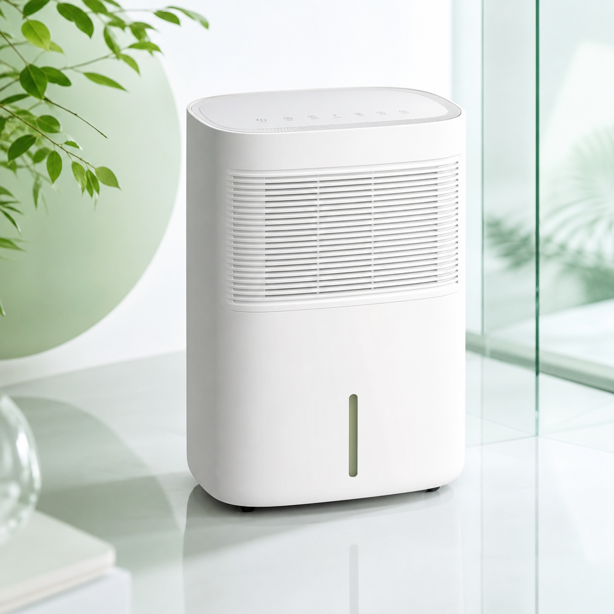
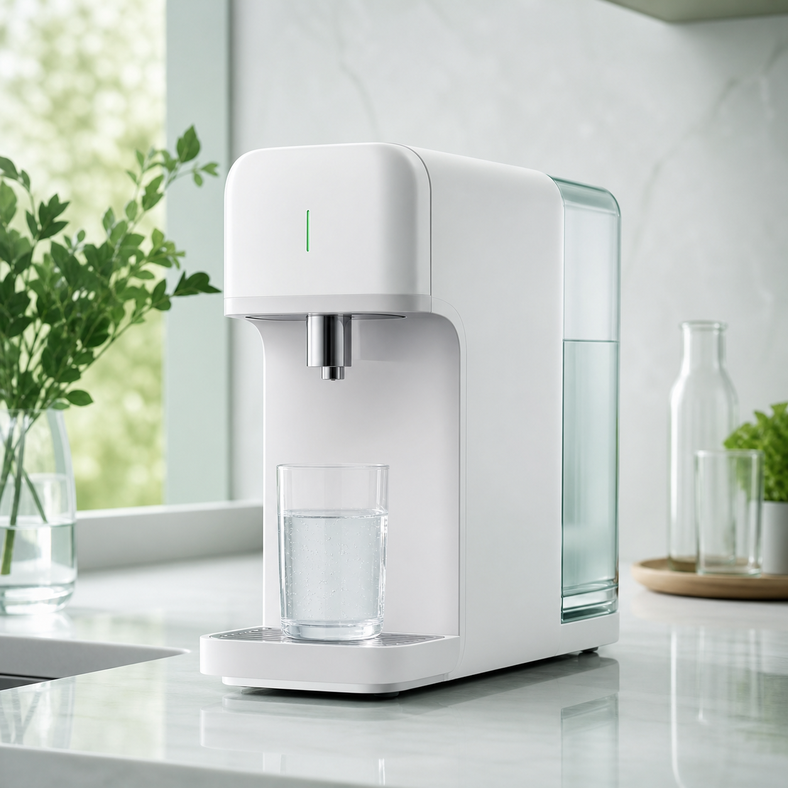

Lower Consumption
Prioritize efficient motors, smart standby behavior, optimized compressor or filtration systems, and category-specific energy targets before a market proposal is approved.
Green AIWA
Green AIWA is a preliminary ESG+ business zone for partners exploring AIWA-branded home electronics with practical sustainability value. The focus is not a slogan, but a category framework that can be reviewed through efficiency, responsible materials, certification needs, and long-term product support.

Future OEM/ODM discussions for sustainability-led product programs.
Concept Image
The visual direction keeps the AIWA site bright and premium, while adding a clear green language through air, water, and energy-related product contexts. It can later become a campaign area for verified green categories, partner factories, and market-specific compliance content.
Green Cooperation
Each green category can be evaluated by energy performance, material direction, water or air impact, packaging reduction, repairability, after-sales planning, and market compliance needs.
Prioritize efficient motors, smart standby behavior, optimized compressor or filtration systems, and category-specific energy targets before a market proposal is approved.
Review environmental claims, certifications, packaging language, documentation, and product labeling so green communication remains credible in each market.
Match product ideas with suitable factories, then keep samples, materials, packaging, and shipment approval under AIWA quality governance.
Green Product Zone

Household cooling concept focused on stable temperature, low power operation, durable components, and long lifecycle planning.

Humidity control for healthier living spaces, positioned around comfort, mold prevention, efficient air management, and practical household wellness.

Countertop water wellness program for clean daily hydration, filter governance, service replacement cycles, and market-specific certification review.